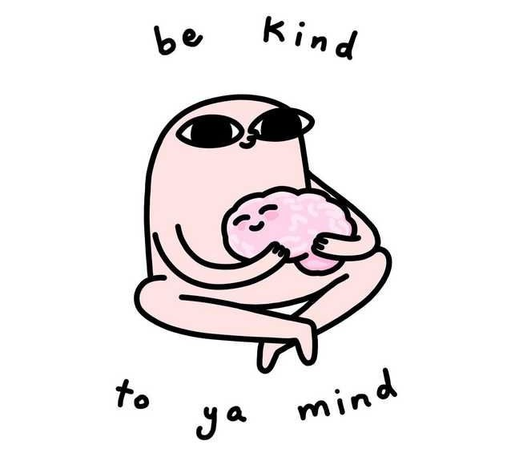

What is Mental Health?
Mental health is defined as a persons emotional, pyshioclogical, and social well-being. Factors that are taken into account when determing one's mental health are family history, previous traumatic experiences, and/or the biology of your body. It also helps determine how we handle stress, relate to others, and make healthy choices. Unlike some may believe, there is a notable difference between having poor mental health and having a mental illness/disorder. A person can experience poor mental health but not be diasgnosed with a mental disorder just as someone with a mental disorder can feel a moment of mental well-being.
Mental Disorders
What is a Mental Disorder?
Mental disorders are factors that affect your wellbeing such as mood, thinking,etc. They have the ability to affect your day and how you function around others and the environment.
The Most Common Types of Mental Disorders
1. Anxiety Disorder: Feelings of worry, anxiety, or fear that are strong enough to interfere with one's daily activities.
2. Clinical Depression: Persistently depressed mood or loss of interest in activities, causing significant impairment in daily life.
3. Bipolar Disorder: Associated with episodes of mood swings ranging from depressive lows to manic highs.
4. Dementia: A group of conditions characterized by impairment of at least two brain functions, such as memory loss and judgment.
5. Attention-Deficit/Hyperactivity Disorder(ADHD): Attention difficulty, hyperactivity, and impulsiveness.
6. Schizophrenia: Thoughts or experiences that seem out of touch with reality, disorganized speech or behavior, and decreased participation in daily activities.
7. Obsessive Compulsive Disorder(OCD): Unreasonable thoughts and fears (obsessions) that lead to compulsive behaviors.
8. Autism: Difficulty with communication, difficulty with social interactions, obsessive interests, and repetitive behaviors.
9. Post Traumatic Stress Disorder(PTSD): A person has difficulty recovering after experiencing or witnessing a terrifying event.
Songs Talking About Mental Disorders
In My Blood; Shawn Mendes
In 2018 Shawn Mendes released a new album with three music videos from songs from the album. The first music video...